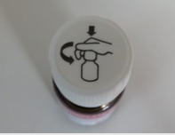
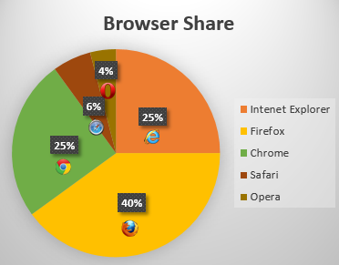
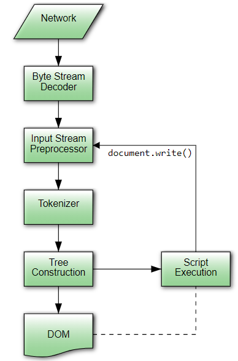

- Images used to label other content
- Images used to supplement other content
- Images conveying succinct information
- Images conveying an impression or emotion
- Images conveying file format
- Graphical representations: charts, diagrams, graphs, maps, illustrations
- Narrative text conveying processes or relationships
- Integrating the text alternative into the surrounding text
Images used to label other content
This example shows two image icons – one of a telephone, one of a fax machine. A phone number follows each image. The user needs to know the purpose of each number. So, the text alternatives “Telephone” and “Fax” are used to identify the device associated with each number.
0123 456 7890
0123 456 7891
<p>
<img src="phone.png" alt="Telephone"> 0123 456 7890
</p>
<p>
<img src="fax.png" alt="Fax"> 0123 456 7891
</p>
This example is from the Web Accessibility Tutorials Images.
Images used to supplement other content
The following image shows a dog wearing a bell. The nearby text explains the purpose of the bell, but it does not explain how the dog actually wears the bell. A short text alternative can describe the information that is displayed, but not explained in the text. In this case, the text alternative is “A dog with a bell attached to its collar.”
Off-duty guide dogs often wear a bell. Its ring helps the blind owner keep track of the dog’s location.
Note: If the text included an explanation of how the dog wears a bell, the image might be considered redundant and therefore decorative.
<p>
<img src="dog.jpg" alt="Dog with a bell attached to its collar.">
Off-duty guide dogs often wear ...
</p>
This example is from the Web Accessibility Tutorials Images.
Images conveying succinct information
This simple diagram shows how to unscrew a bottle cap. The information can be described in a short sentence: Push the cap down and turn it counter-clockwise.

<img src="cap.png" alt="Push the cap down and turn it counter-clockwise.">
This example is from the Web Accessibility Tutorials Images.
Images conveying an impression or emotion
This photograph shows a man and woman sitting side by side. The man holds a boy in his lap, and they are all smiling. It’s a stock image. So, the individuals should not be identified. The image indicates that the website or the company it represents is family-friendly. The text alternative is “We’re family-friendly,” because this best describes the intended impression.
<img src="family.png" alt="We’re family-friendly.">
This example is from the Web Accessibility Tutorials Images.
Images conveying file format
In this example, a document is available to download in three different formats identified by format icons within text links. They have the text alternatives “HTML,” “Word document,” and “PDF” to distinguish the file type for each link.
2012 Annual report and accounts (43KB), also available in (254KB) or (353KB) format.
Note: If the format identification were written as part of the link text, the image might be considered decorative and have a null (empty) alt attribute (alt=""). It could remain in the same link element (<a>) as the text, to include it in the clickable area.
<p>
<a href="…">
2012 Annual report and accounts
<img src="html5logo.png" alt="HTML"> (43KB)
</a>, also available in
<a href="…">
<img src="worddocument.png" alt="Word document"> (254KB)
</a>
or
<a href="…">
<img src="pdfdocument.png" alt="PDF"> (353KB)
</a>
format.
</p>
This example is from the Web Accessibility Tutorials Images.
Graphical representations: charts, diagrams, graphs, maps, illustrations
In the following example, we have an image of a pie chart, with text in the alt attribute representing the data shown in the pie chart. This example is from 4.7.5.1.4. Graphical Representations: Charts, diagrams, graphs, maps, illustrations from HTML 5.3.

<img src="piechart.gif" alt="A pie chart is titled Browser Share. The pie chart shows the percentages of users who prefer different browsers: Firefox 40%, Internet Explorer 25%, Chrome 25%, Safari 6% and Opera 4%.">
Narrative text conveying processes or relationships
This image has a very technical description that is almost too long for a text alternative. If the alternative is much longer, it would be better handled in a longdesc or aria-describedby attribute.

<p>In the common case, the data handled by the tokenization stage comes from the network, but it can also come from script.</p> <p><img src="images/parsing-model-overview.svg" alt="The Network passes data to the Input Stream Preprocessor via the Byte Stream Decoder. The Input Stream Preprocessor then passes the data to the Tokenizer, which in turn sends it to the Tree Construction stage. From there, data goes to both the DOM and Script Execution. Script Execution is linked to the DOM, and, using document.write(), passes data to the Tokenizer via the Input Stream Preprocessor."></p>This example and the next came from the WCAGWG version of HTML. Do we need different examples?
Integrating the text alternative into the surrounding text
When an unlabeled image is part of a narrative, the wording of the text alternative should match the wording of the surrounding text, based on reading order. The following two examples show good and bad solutions for inserting a text alternative into a story.
First, here's the good solution. This sample shows how the text alternative should just be what you would have put in the prose if the image had never existed.
<p> You are standing in an open field west of a house. <img src="house.jpeg" alt="The house is white, with a boarded front door."> There is a small mailbox here. </p>
Second, here's the bad solution. In this incorrect way of doing things, the alternative text is simply a description of the image, instead of a textual replacement for the image. The differences are subtle, but when the image isn't shown, the text doesn't flow as well as in the first example.
<p> You are standing in an open field west of a house. <img src="house.jpeg" alt="A white house, with a boarded front door."> There is a small mailbox here. </p>